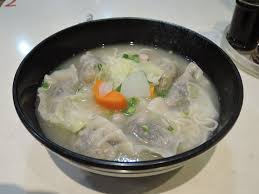

Recipe for Dumpling Soup

- 2 cups vegetable broth
- 1 Tbsp soy sauce
- 1 tsp toasted sesame oil
- 1/4 tsp fish sauce
- 1 green onion
- 10 frozen dumplings
- 1/2 cup fresh spinach
- Combine the vegetable broth, soy sauce, toasted sesame oil, and the white parts of a sliced green onion in a medium-sized pot.
(If using, also add the fish sauce, pre-cooked proteins or tofu, and any fresh or frozen vegetables that need time to soften.)
- Bring the broth up to a boil on medium-high heat. Once boiling, add the dumplings.
- Cover the pot and allow the soup to come back up to a boil. Boil the dumplings for about 2 minutes or until they are cooked through. (Consult package directions.)
- Turn off the heat and stir in the green parts of the sliced green onion and a handful of spinach.
- Split the soup into 2 serving bowls and top with any desired condiments.
Home